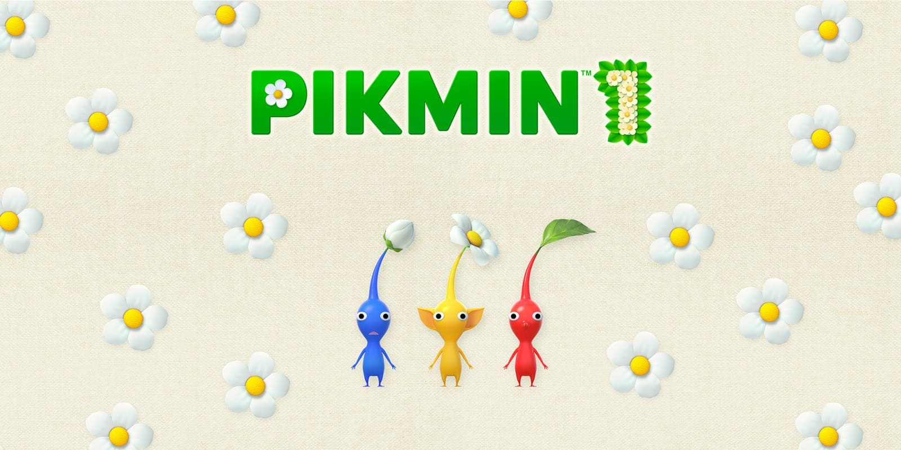
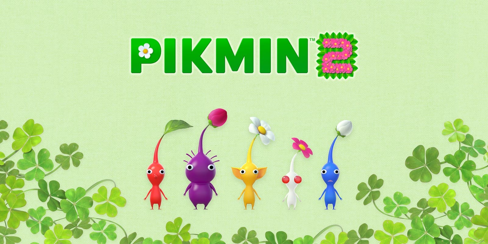
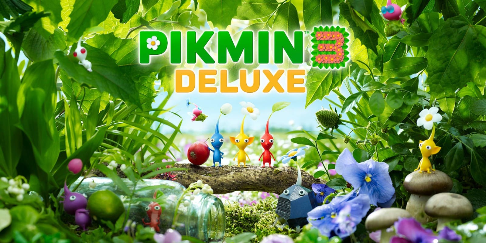
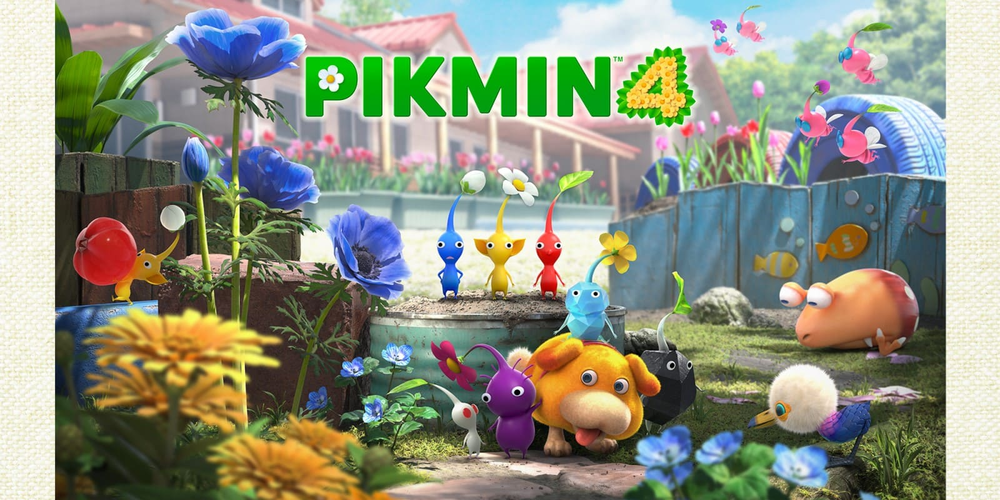

El inicio de todo. Olimar aterriza de emergencia en un planeta desconocido y debe reconstruir su nave con la ayuda de los Pikmin, pero solo hay 3 tipos, rojo, azul y amarillo. Con límite de 30 días, el juego mezcla estrategia en tiempo real y exploración. Es complicado por que tiene muchos bugs y límite de días. Salió para la gamecube en 2001 y muchísimo más tarde, en 2024, para switch en un pack con el 2.

Olimar regresa con Louie (compañero de trabajo) para pagar las deudas de su empresa. Ya no hay límite de tiempo y aparecen nuevos Pikmin (morados, son pesados y los blancos, siendo estos últimos venenosos). Introduce cuevas y jefes gigantes. Salió para la gamecube en 2004 y muchísimo más tarde, en 2024, para switch en un pack con el 1.

Tiene 3 protagonistas: Alph, Brittany y Charlie pero no son del mismo planeta que Olimar y Louie, su misión es recolectar frutas para salvar a Koppai. Se añaden Pikmin de roca y alados. Salió para la WiiU y más tarde, en 2024, para switch.

La entrega más reciente. Introduce a Oatchi, el perrito espacial que ayuda en todo, además de los Pikmin hielo. Es el más fácil de los 4.
